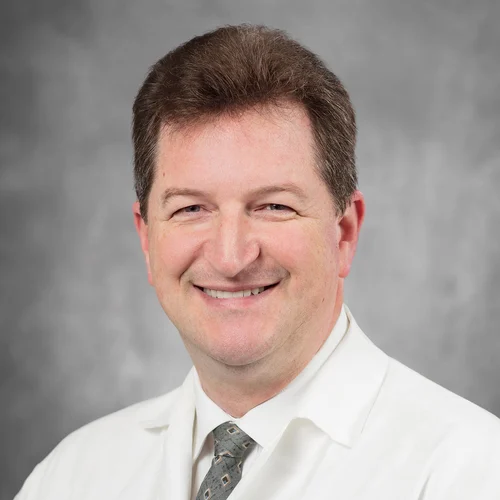
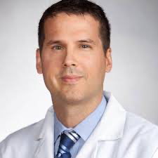

§01 Program leadership

Program Director
Brian Kwan, MD MS FAMIA
Emergency Medicine • Clinical Informatics
UC San Diego Health
UC San Diego Health
Residency:Emergency Medicine, Highland Hospital, Alameda Health System, Oakland
Fellowship:Clinical Informatics, UC San Diego School of Medicine
Program Director of the UCSD Clinical Informatics Fellowship. Oversees program design, ACGME accreditation, recruitment, and fellow progression. Focus areas include ED informatics, AI/ML in clinical workflows, and fellowship pedagogy, with a particular interest in medical education informatics.

Associate Program Director
Brian Clay, MD
Hospital Medicine • Clinical Informatics
UC San Diego Health
Faculty Affiliate, Jacobs Center for Health Innovation (JCHI)
UC San Diego Health
Faculty Affiliate, Jacobs Center for Health Innovation (JCHI)
Residency:Internal Medicine, Vanderbilt University Medical Center, Nashville
Associate Program Director with longstanding leadership in UCSD Health's informatics enterprise. Focus areas include inpatient workflow, clinical documentation, and EHR-based quality measurement.

Associate Program Director
Robert El-Kareh, MD MPH MS
Hospital Medicine • Clinical Informatics
UC San Diego Health
UC San Diego Health
Residency:Internal Medicine, Rhode Island Hospital / Brown University
Fellowship:Research Fellowship in Biomedical Informatics, Brigham & Women's Hospital
Associate Program Director with deep expertise in clinical decision support, diagnostic error, and the implementation science of CI interventions.
// Note
Faculty bios are placeholders awaiting program sign-off. Send the program office updated language, additional appointments, and any preferred photo crops and we'll swap them in.